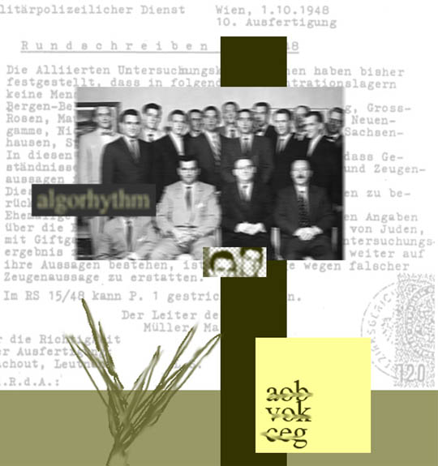

Billy Biondi
Algorhythm
 |
| (1 of 5) |
 |
| (1 of 5) |
Billy Biondi is a collage artist. He writes, "I take found photos, manipulate them and add other elements. Sometimes I start with a photo and build around it. Other times a word or phrase comes first. I like things that are blurry, off center, and out of focus. I try not to be obvious." New Jersey-born, he received a BFA in painting from the Mason Gross School of Art, New Brunswick, NJ, in 1984.
He says, "Since I was a child the only thing I ever wanted to do was create. In my early 20s I spent most of my waking hours either making, looking at, or thinking about art. I displayed my work anywhere I could: vacant lots, abandoned store windows, street corners. I would make small, impromptu sculptures and leave them for the elements (or people) to destroy them. I painted, sculpted, photographed, and performed whenever and wherever I could.
"I endeavored to get shown in more legitimate venues. I exhibited in group shows in the NY metro area. I was represented by the Lawrence Gallery in NYC and showed in Paris when the gallery moved there in 1988. I did a one-year internship at Artists Space in Manhattan in 1984 and was guest curator for City Without Walls gallery in Newark, NJ in 1987.
"In 1991 I decided to take a break from art and pursue other interests. I moved to San Francisco. I built furniture, restored antiques, renovated houses. In 1998 I became a web designer/developer, which is how I make my living today. I moved to Corvallis, OR in 2006. I started getting interested in digital photography, which lead to my current work in digital collage."